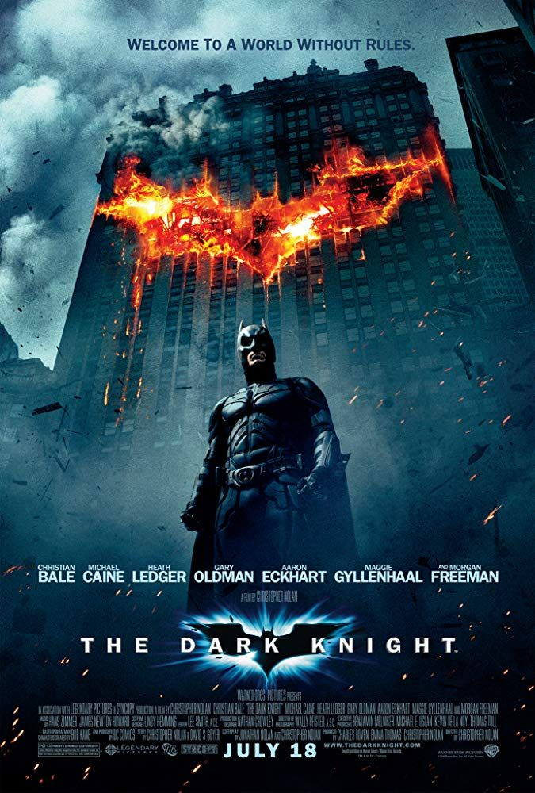
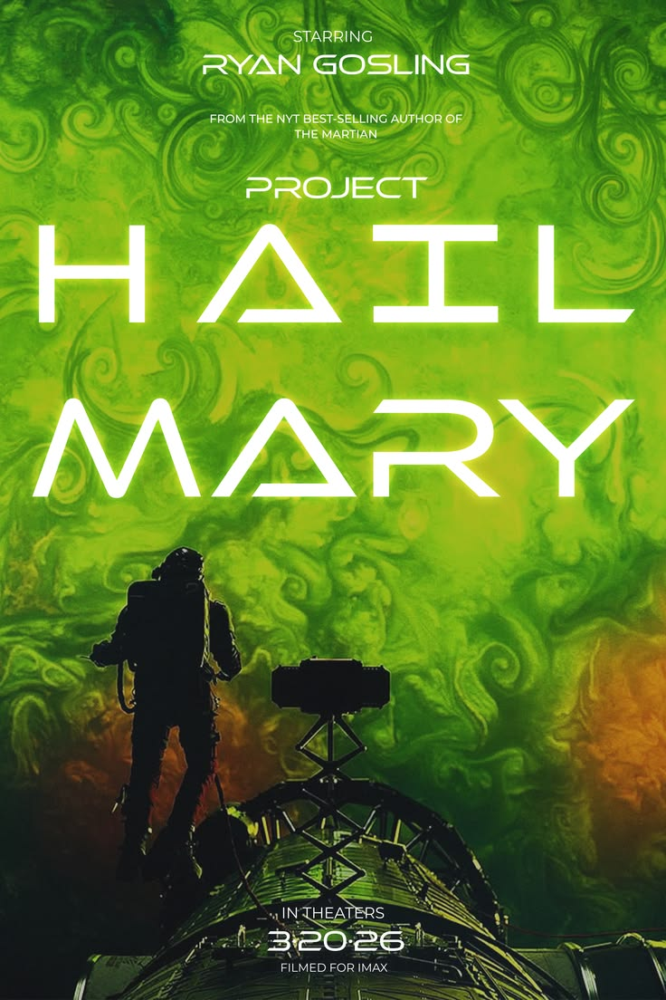

Top 3 Movies

- Heath Ledger's Joker is one of the best villain performances ever. He's unpredictable and genuinely unsettling. He won a posthumous Oscar for it.
- It treats the audience like adults. The movie explores real ethical dilemmas like the ferry scene and the choice to make Batman the villain.
- The practical effects hold up. The truck flip and Hans Zimmer's score were done with real stunts and rich detail, not just CGI.

- Hans Zimmer's score is unforgettable. The organ-driven music feels both massive and emotional. It perfectly matches the scale of space exploration.
- The science is grounded in real physics. Christopher Nolan worked with physicist Kip Thorne to depict black holes and time dilation accurately. The visuals of Gargantua were so accurate they led to real research papers.
- It's a space movie that's actually about love. The relationship between Cooper and his daughter Murph drives the entire plot. The docking scene and the bookshelf reveal hit harder than most pure sci-fi can.

- The mystery of waking up alone with amnesia hooks you immediately. Piecing together who the main character is and why he's in space makes the first half impossible to put down.
- The friendship between Grace and Rocky is the heart of the story. Two characters who can't even share an atmosphere become best friends through curiosity and trust.
- The science problem-solving is fun without being overwhelming. Andy Weir grounds wild scenarios in real physics and chemistry, so every solution feels earned rather than magic.